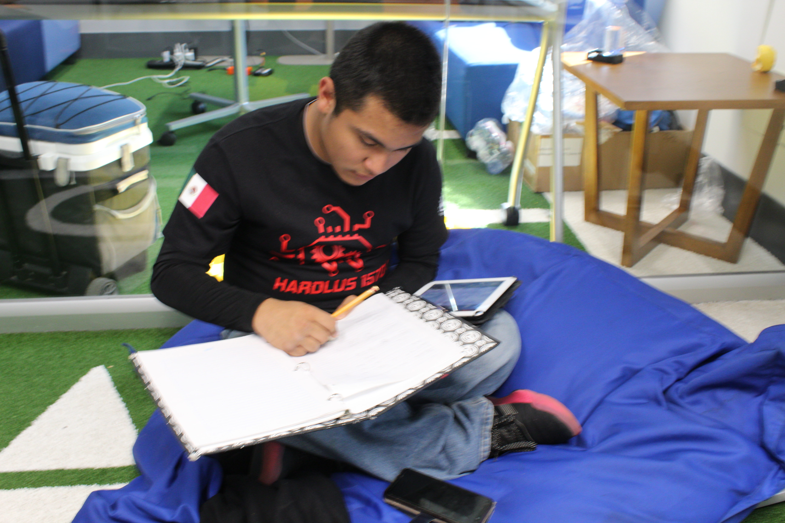

Mini competencia de FTC
Duración: Agosto a Septiembre 2019
Lo que paso
Después de las preparaciones para la competencia y que todos se hayan reunido. Empezó la competencia: preparamos al robot para competir.Hubo un desarrollo bastante bien, ganamos la mayoría de los partidos y pudimos haber conseguido el primer lugar, si no hubiera sido por fallas del robot, que ya tendremos corregidas/reparadas para el verdadero regional de FTC. Esto nos sirvió para saber nuestras limitaciones, posibles alianzas y lo que debemos mejorar para la próxima competencia real.
Objetivos Personales y CAS
Personal: Desarrollar con exito mi rol en esta mini competencia CAS: Trabajar en colaboración con otras personas
Logre este objetivo cooperando con todos los equipos de la cascarita, ya sea llevando cosas del taller, hablando con ellos o en el scouting, trabaje con mi equipo siendo el jugador humano y ayudándolos en lo que podía, después coopere con las alianzas que tuvimos para ganar los partidos que ganamos. Logre este objetivo cooperando con todos los equipos de la cascarita, ya sea trayendo cosas del taller, hablando con ellos o en el scouting, trabaje con mi equipo siendo el jugador humano y ayudándolos en lo que podía, después coopere con las alianzas que tuvimos para ganar los partidos que ganamos.Logre este objetivo cooperando con todos los equipos de la cascarita, ya sea trayendo cosas del taller, hablando con ellos o en el scouting, trabaje con mi equipo siendo el jugador humano y ayudándolos en lo que podía, después coopere con las alianzas que tuvimos para ganar los partidos que ganamos.

Mis aprendizajes
Aprendí a que debemos aceptar cuando perdemos, pero que si perdemos, no nos debemos enojar si no analizar por qué perdimos y ver los errores que hicimos y corregir para las próximas veces. También aprendí que incluso para algo que parece algo muy competitivo , debemos cooperar para disfrutar al máximo la competencia.